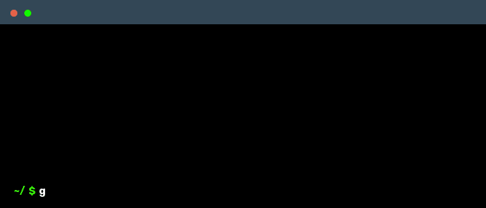

API REST com FastAPI e PostgreSQL
Bem-vindo à documentação da API REST construída com FastAPI e PostgreSQL. Esta documentação fornece informações sobre como usar a API e seus endpoints.
Visão Geral
Esta API permite que os usuários registrem-se, façam login e consultem dados meteorológicos. A API é construída usando FastAPI e PostgreSQL, e é executada em contêineres Docker.
API Aberta
A api está disponível em:
http://afe6a8d3a425b40739d688eb9c38c234-697055407.us-east-1.elb.amazonaws.com/docs
Nela, você pode:
-
Registrar um novo usuário:
curl -X POST http://afe6a8d3a425b40739d688eb9c38c234-697055407.us-east-1.elb.amazonaws.com/registrar -d '{"nome": "teste", "email": "teste@teste.com", "senha": "teste"}' -
Fazer login:
curl -X POST http://afe6a8d3a425b40739d688eb9c38c234-697055407.us-east-1.elb.amazonaws.com/login -d '{"email": "teste@teste.com", "senha": "teste"}' -
Consultar dados meteorológicos:
curl -X GET http://afe6a8d3a425b40739d688eb9c38c234-697055407.us-east-1.elb.amazonaws.com/consultar \ -H 'Authorization: Bearer {token_jwt_aqui}'
onaws.com
Endpoints
Configuração e Execução
Pré-requisitos
- Docker
- Docker Compose
Passos para executar o projeto
-
Baixe o docker compose aqui:
-
Rode o comando
docker-compose up -d -
Accesse a documentação da API em:
http://localhost:8000/docs

Como Usar a API
Pelo terminal
Para acessar a API pelo terminal, você pode usar o comando curl. Aqui estão alguns exemplos de como usar a API:
-
Registrar um novo usuário:
curl -X POST http://localhost:8000/registrar -d '{"nome": "teste", "email": "teste@teste.com", "senha": "teste"}' -
Fazer login:
curl -X POST http://localhost:8000/login -d '{"email": "teste@teste.com", "senha": "teste"}' -
Consultar dados meteorológicos:
curl -X GET http://localhost:8000/consultar \ -H 'Authorization: Bearer {token_jwt_aqui}'
Pela documentação
A aplicação possui uma documentação interativa que pode ser acessada em http://localhost:8000/docs. A documentação permite que você teste os endpoints da API e veja exemplos de requisições e respostas.